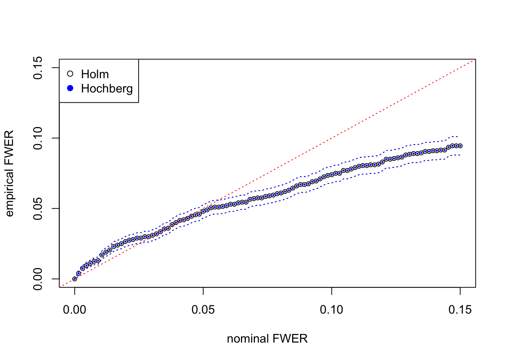

Last updated: 2017-02-14
Code version: ab7e085
In order to understand the behavior of \(p\)-values of top expressed, correlated genes under the global null, simulated from GTEx data, we apply two FWER-controlling multiple comparison procedures, Holm’s “step-down” (Holm 1979) and Hochberg’s “step-up.” (Hochberg 1988)
It can be shown that Holm’s procedure conservatively controls the FWER in the strong sense, under arbitrary correlation among \(p\)-values.
First, order the \(p\)-values
\[ p_{(1)} \leq p_{(2)} \leq \cdots \leq p_{(n)} \]
and let \(H_{(1)}, H_{(2)}, \ldots, H_{(n)}\) be the corresponding hypotheses. Then examine the \(p\)-values in order.
Step 1: If \(p_{(1)} \leq \alpha/n\) reject \(H_{(1)}\) and go to Step 2. Otherwise, accept \(H_{(1)}, H_{(2)}, \ldots, H_{(n)}\) and stop.
……
Step \(i\): If \(p_{(i)} \leq \alpha / (n − i + 1)\) reject \(H_{(i)}\) and go to step \(i + 1\). Otherwise, accept \(H_{(i)}, H_{(i + 1)}, \ldots, H_{(n)}\) and stop.
……
Step \(n\): If \(p_{(n)} \leq \alpha\), reject \(H_{(n)}\). Otherwise, accept \(H_{(n)}\).
Hence the procedure starts with the most extreme (smallest) \(p\)-value and stops the first time \(p_{(i)}\) exceeds the critical value \(\alpha_i = \alpha/(n − i + 1)\).
It can be shown that Holm’s procedure conservatively controls the FWER in the strong sense, under arbitrary correlation among \(p\)-values.
It can be shown that Hochberg’s procedure conservatively controls the FWER in the strong sense, when \(p\)-values are independent.
First, order the \(p\)-values
\[ p_{(1)} \leq p_{(2)} \leq \cdots \leq p_{(n)} \]
and let \(H_{(1)}, H_{(2)}, \ldots, H_{(n)}\) be the corresponding hypotheses. Then examine the \(p\)-values in order.
Step 1: If \(p_{(n)} \leq \alpha\) reject \(H_{(1)}, \ldots, H_{(n)}\) and stop. Otherwise, accept \(H_{(n)}\) and go to step 2.
……
Step \(i\): If \(p_{(n - i + 1)} \leq \alpha / i\) reject \(H_{(1)}, \ldots, H_{(n - i + 1)}\) and stop. Otherwise, accept \(H_{(n - i + 1)}\) and go to step \(i + 1\).
……
Step \(n\): If \(p_{(1)} \leq \alpha / n\), reject \(H_{(1)}\). Otherwise, accept \(H_{(1)}\).
Hence the procedure starts with the least extreme (largest) \(p\)-value and stops the first time \(p_{(i)}\) falls below the critical value \(\alpha_i = \alpha/(n − i + 1)\).
It can be shown that Hochberg’s procedure conservatively controls the FWER in the strong sense, when \(p\)-values are independent.
Sarkar 1998 also pointed out that Hochberg’s procedure can control the FWER strongly under certain dependency among the test statistics, such as a multivariate normal with a common marginal distribution and positive correlations.
Holm’s procedure is based on Bonferroni correction, whereas Hochberg’s on Sime’s inequality. Both use exactly the same thresholds, comparing \(p_{(i)}\) with \(\alpha/(n − i + 1)\), yet Holm’s starts from the smallest \(p\)-value, and Hochberg’s from the largest. Hochberg’s is thus strictly more powerful than Holm’s.
Now we apply the two procedures to the simulated, correlated null data.
p1 = read.table("../output/p_null_liver.txt")
p2 = read.table("../output/p_null_liver_777.txt")
p = rbind(p1, p2)
m = nrow(p)
holm = hochberg = matrix(nrow = m, ncol = ncol(p))
for(i in 1:m){
holm[i, ] = p.adjust(p[i, ], method = "holm") # p-values adjusted by Holm (1979)
hochberg[i, ] = p.adjust(p[i, ], method = "hochberg") # p_values adjusted by Hochberg (1988)
}## calculate empirical FWER at 100 nominal FWER's
alpha = seq(0, 0.15, length = 100)
fwer_holm = fwer_hochberg = c()
for (i in 1:length(alpha)) {
fwer_holm[i] = mean(apply(holm, 1, function(x) {min(x) <= alpha[i]}))
fwer_hochberg[i] = mean(apply(hochberg, 1, function(x) {min(x) <= alpha[i]}))
}
fwer_holm_se = sqrt(fwer_holm * (1 - fwer_holm) / m)
fwer_hochberg_se = sqrt(fwer_hochberg * (1 - fwer_hochberg) / m)Here at each nominal FWER from \(0\) to \(0.15\), we plot the empirical FWER, calculated from \(m = 2000\) independent simulation trials. Dotted lines indicate one standard error computed from binomial model \(= \sqrt{\hat{\text{FWER}}(1 - \hat{\text{FWER}}) / m}\).
plot(alpha, fwer_holm, pch = 1, xlab = "nominal FWER", ylab = "empirical FWER", xlim = c(0, max(alpha)), ylim = c(0, max(alpha)), cex = 0.75)
points(alpha, fwer_hochberg, col = "blue", pch = 19, cex = 0.25)
lines(alpha, fwer_holm - fwer_holm_se, lty = 3)
lines(alpha, fwer_holm + fwer_holm_se, lty = 3)
lines(alpha, fwer_hochberg + fwer_hochberg_se, lty = 3, col = "blue")
lines(alpha, fwer_hochberg - fwer_hochberg_se, lty = 3, col = "blue")
abline(0, 1, lty = 3, col = "red")
legend("topleft", c("Holm", "Hochberg"), col = c(1, "blue"), pch = c(1, 19))
The results from Holm’s step-down and Hochberg’s step-up are almost the same for this simulated data set. They both give almost the same discoveries, although in theory Hochberg’s should be strictly more powerful than Holm’s. The agreement of both procedures may indicate that test statistics are indeed inflated for moderate observations but not extreme observations.
sessionInfo()R version 3.3.2 (2016-10-31)
Platform: x86_64-apple-darwin13.4.0 (64-bit)
Running under: macOS Sierra 10.12.3
locale:
[1] en_US.UTF-8/en_US.UTF-8/en_US.UTF-8/C/en_US.UTF-8/en_US.UTF-8
attached base packages:
[1] stats graphics grDevices utils datasets methods base
other attached packages:
[1] workflowr_0.3.0 rmarkdown_1.3 edgeR_3.14.0 limma_3.28.14
loaded via a namespace (and not attached):
[1] Rcpp_0.12.9 codetools_0.2-15 digest_0.6.9 rprojroot_1.2
[5] backports_1.0.5 git2r_0.18.0 magrittr_1.5 evaluate_0.10
[9] stringi_1.1.2 tools_3.3.2 stringr_1.1.0 yaml_2.1.14
[13] htmltools_0.3.5 knitr_1.15.1 This R Markdown site was created with workflowr